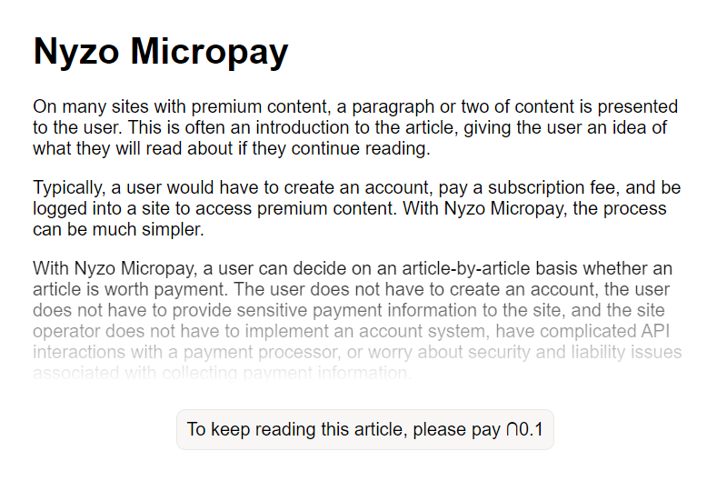
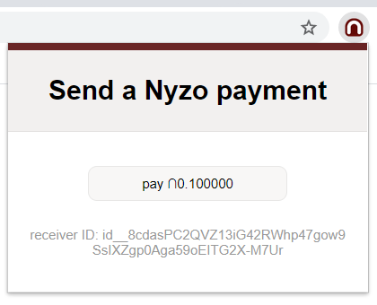
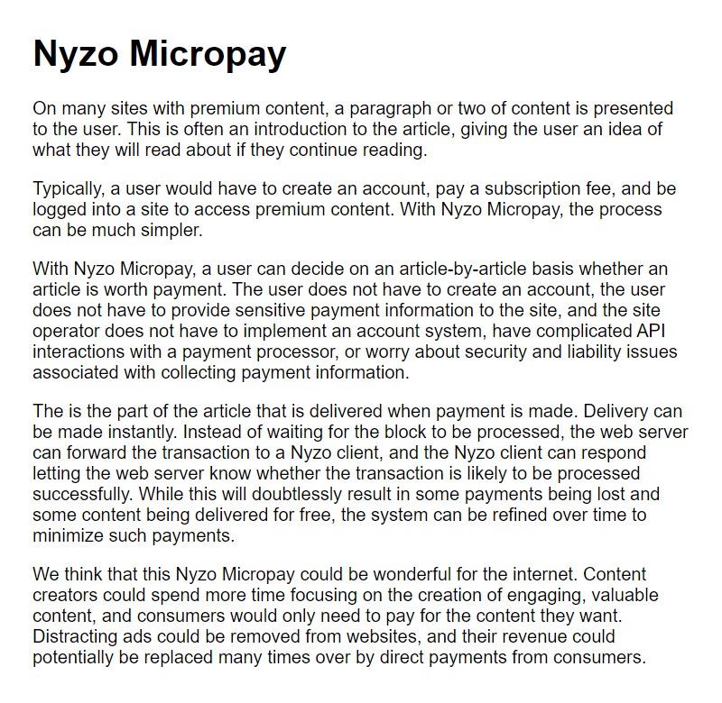

The internet needs a native currency. Content creators around the world create the value of the internet, but large companies extract much of that value. If the internet had a native currency on which content creators could consistently rely, creators could monetize their content directly with consumers.
NTTP-5: we propose adding Nyzo Micropay functionality to the Chrome extension.
This NTTP would include the initial integration of Micropay functionality in the Chrome extension and example server-side code that would provide content to users based on payment status. The server-side code would be implemented in the Nyzo verifier codebase in Java. Alternate implementations of the server side of the process, such as WordPress plugin integration, would be the subject of other NTTPs.
On a Micropay-enabled page, the user would be presented with premium content with a message that the content could be unlocked by making a payment in Nyzo.
The user would make a payment with the Nyzo extension.
The premium content would be presented to the user. A cookie would be placed to allow the user to revisit the content for a short time without making an additional payment.
NTTP-5 will be implemented if ∩23,000 is sent to account id__89dp8CC9e8HD16cT.zKVaBWz.aUGMavxYCJ4347qScHCVHva_NT5.
4 weeks
When this NTTP was paid, the team was taking a break from Nyzo development to reassess our involvement with the project. We had enabled monitoring and notifications for accounts that were generated for the purpose of NTTP payments, but the account for this NTTP was mistakenly left off the monitoring list. This monitoring mistake was noticed and corrected on 2020-08-25, at which time we saw the payment for this NTTP.
We have considered simply refunding the amount and asking for another transaction if the cycle wants this NTTP to be implemented. This is what we initially planned for any late deliveries, and this is what we will do for any future NTTP that cannot be delivered on time. However, in this particular case, an immediate refund seems like unnecessary hassle for the cycle and unnecessary further delay for an important initiative for Nyzo.
If the cycle wants this payment to be refunded, a cycle transaction with the subject "cancel NTTP-5" should be created and signed (any amount, any receiver). If such a transaction is passed before we release the code for this NTTP, we will refund the payment to the cycle account and cancel the release. Otherwise, we plan to implement and release the code for this NTTP by 2020-09-22.
The software changes were implemented in version 603 of the Java codebase and version 2 of the Chrome extension.